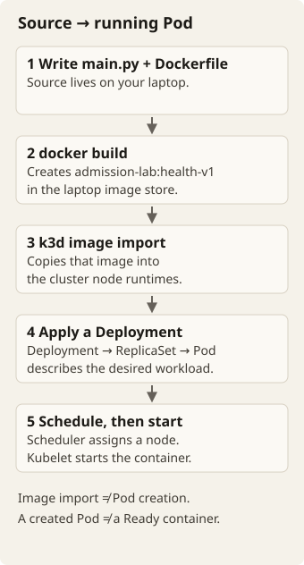
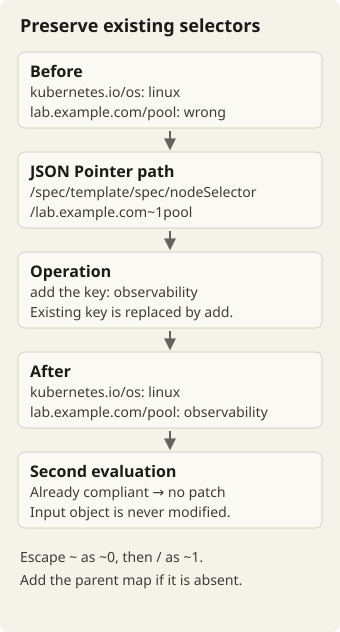
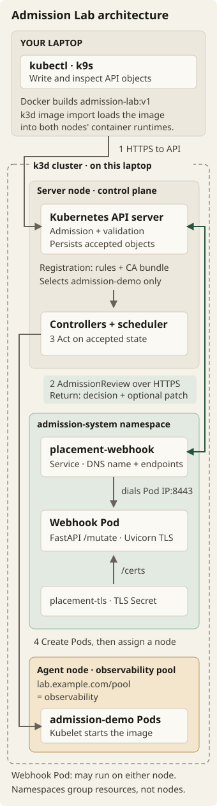
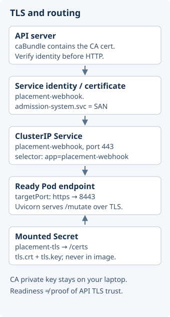
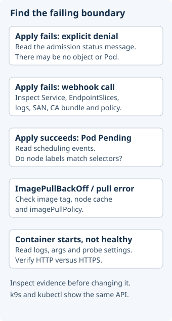

Kubernetes Admission Lab
Build, explain and troubleshoot a Go admission webhook on a local Kubernetes cluster. Plan about 9½ hours over two days. This includes one optional stage of 1 hour. The lab has diagrams, short animations, hints and optional solutions.
Step 0 — Read the assigned article
Read the article Kubernetes Mutating Webhook with Python and FastAPI from start to end before you do other work. Do not install tools, run task doctor, create a cluster or write code before you read it. Plan 30 minutes for the reading. Write down the terms that you do not know, but do not stop to research each one.
The code in the article is Python. You write your webhook in Go. The request flow and the Kubernetes objects are the same in both languages.
While you read, write down your answers to these questions:
- Follow one request from the API server to the webhook and back. What changes? Which component stores the result?
- What does each of these objects do: the Deployment, the Service, the Secret and the MutatingWebhookConfiguration?
- Why does the example need a certificate? Why is the patch base64-encoded? Write down your guess.
You do not have to understand every line now. You can open all stages and hints at any time. Vibe Learn locks no stage.
Reading hint — find the caller
The API server calls the webhook. The webhook returns a decision and, optionally, a patch. The webhook does not call kubectl, and it does not store the workload.
Compare your explanation
The example changes the Pod template of a workload. It does not change a running container. Admission occurs after authentication and authorization, and it can change or reject a write. A mutation response contains the UID of the original request and a base64-encoded JSON Patch. The API server applies the patch and completes admission and validation. It stores the object only if all of these steps accept it. After that, controllers create Pods. The scheduling of those Pods is a separate step.
AI mentor prompt
I am on Step 0, and I finished the article. Ask me to explain the request flow. Then help me with my recorded questions, one question at a time. Give one hint at a time. Do not edit files. Do not show the solution unless I ask for it. After you show a solution, ask me to explain it. Then give me one changed requirement to implement.
The assignment
An infrastructure team wants selected workloads to run on an observability node pool. Build a webhook that sets the node selector lab.example.com/pool=observability. The webhook must keep all other placement constraints. The lab practices the Kubernetes, networking, programming and reliability skills for the groundcover Infra Engineer role.
| Step | Budget | Evidence |
|---|---|---|
| 0 · Read | 30 minutes | Your explanation of the article and your recorded questions |
| 1 · Doctor | 30 minutes | Diagnostics for the tools and the laptop |
| 2 · First Pod | 60 minutes | An image that you built, which answers health requests on Kubernetes |
| Optional · Upstream | 60 minutes | The article's repository, run without changes, and its problems found in k9s |
| 3 · Mutation | 90 minutes | Go tests and valid patches |
| 4 · Admission | 60 minutes | Evidence for TLS, mutation and placement |
| 5 · Diagnose | 90 minutes | Nine failures, caused and repaired |
| 6 · Rehearse | 120 minutes | A coding variation, a deployment and an explanation |
| 7 · Ready | 30 minutes | A restart and a rebuild on the interview laptop |
Day one: Steps 0–4 and the optional upstream stage (5½ hours). Day two: Steps 5–7 (4 hours). The total is 9½ hours, or 8½ hours without the optional stage. The budgets help you plan. They are not timers or scores.
If you are stuck, open a folded solution. Explain it, then implement a variation. Work in your own editor. You run the Go tests and the cluster commands in your own terminal. Vibe Learn has no automated checker for this project.
Source map — after your first reading
Use these links to answer specific questions. You do not have to read all of the Kubernetes documentation.
- Earlier validating webhook article: allowed and denied responses, and the TLS setup. Its source and requirements use the Python servers Flask and Gunicorn. The Gunicorn and WSGI pages explain that server stack. Your Go webhook does not use it.
- Admission controllers: where admission occurs in the request lifecycle. The phase illustration in the article is the model for the admission diagram in this lab.
- Go net/http: the HTTP server, and route patterns with a method, such as
POST /mutate(Go 1.22 and later). net/http/httptest: test a handler without a network listener. - encoding/json: a
[]bytevalue encodes as a base64 string. log/slog: structured JSON logs. - Mutating webhook repository (Python): main.py, models.py, the Dockerfile, the requirements and the README.
- Kubernetes manifests: the registration, the serving objects, the Secret and a test file. The article calls the test file tests.yaml. In the repository, its name is test.yaml.
- JSON Patch: the operations and the escape rules for keys. See also RFC 6902 and RFC 6901.
- Admission responses: uid, allowed, patchType and the encoded patch.
- CertificateTools: the SAN, CA and server certificate fields. In this lab, you make the keys on your laptop with OpenSSL.
Glossary
This brief uses each term below with one meaning only.
- Webhook: your Go HTTPS server. The API server sends it admission requests. Webhook Pod: the Pod that runs it.
- Registration: the MutatingWebhookConfiguration object. It tells the API server which requests to send to the webhook, and where.
- Workload: a Deployment, StatefulSet or DaemonSet.
- AdmissionReview: the JSON envelope for one admission request and its response.
- Patch: a JSON Patch (RFC 6902). It is a list of operations, such as
add. It is not the full changed object. - JSON Pointer: the path in a patch operation (RFC 6901), for example
/spec/template/spec/nodeSelector. - CA certificate: the certificate that signs the server certificate. The API server trusts it through the caBundle field. Server certificate: the certificate that the webhook presents.
- SAN (subject alternative name): a DNS name in the server certificate. The API server compares it with the name that it connects to.
- failurePolicy: what the API server does when a webhook call fails.
Failrejects the write.Ignoreaccepts the write without changes. - Lab cluster: the k3d cluster with the name admission-lab. k3d runs Kubernetes nodes as Docker containers.
- Delete and remove: you delete an object from the cluster. You remove a field or a label from an object.
- Mentor: your AI assistant in Mentor mode. Brief: this document.
The article's code is a starting point, not a model
The repository for the article runs, but not correctly on your cluster. In the optional stage after Step 2, you run it without changes and find out why. Then you write your own webhook. An interview can start in the same way: "Here is the code. Make it run."
Optional later discussion: Helm packaging, certificate rotation, availability, observability, and mutation compared with reconciliation. A webhook changes one request. An operator reconciles state again and again. This project does not include Terraform infrastructure, eBPF, an operator or a full telemetry stack.
Step 1 — Check your laptop
After you read the article, choose Workspace → Create workspace in the desktop app. The app creates the brief, the assistant instructions, Taskfile.yml and doctor.go. To use a folder that you already have, attach it and choose Add missing workspace files. The app does not replace your files. Choose Mentor mode to get hints.
The app numbers the exported step files from 01. The headings in those files keep the numbers of this lab, Step 0 to Step 7. When you ask the mentor for help, give the heading.
Run the doctor from the workspace root. You can read both files below. If you use only the browser preview, copy them into your folder by hand.
Included file — Taskfile.yml (written by the app)
version: '3'
tasks:
doctor:
desc: Run read-only setup checks
cmds:
- go run doctor.go
ready:
desc: Require a working two-node lab cluster
cmds:
- go run doctor.go --ready
test:
desc: Run your Go tests
cmds:
- go test ./...Included file — doctor.go (written by the app)
The first line, //go:build ignore, keeps this file out of your own Go module. go build ./... and go test ./... do not compile it. go run doctor.go names the file, so Go runs it.
//go:build ignore
// Command doctor runs read-only checks on this laptop for the admission lab.
// It installs nothing. It does not change files, kubeconfig or cluster objects.
//
// Run it with: go run doctor.go [--ready] [--cluster NAME]
//
// The build tag above keeps this file out of your own module. "go build ./..."
// and "go test ./..." ignore it. "go run doctor.go" names the file, so Go runs it.
package main
import (
"bufio"
"bytes"
"context"
"encoding/json"
"errors"
"flag"
"fmt"
"io"
"os"
"os/exec"
"regexp"
"runtime"
"strconv"
"strings"
"time"
)
type tool struct {
name string
args []string
}
var tools = []tool{
{"docker", []string{"--version"}},
{"k3d", []string{"version"}},
{"kubectl", []string{"version", "--client"}},
{"k9s", []string{"version", "--short"}},
{"task", []string{"--version"}},
{"go", []string{"version"}},
{"openssl", []string{"version"}},
{"curl", []string{"--version"}},
}
// These are variables so that a test can replace them.
var (
lookPath = exec.LookPath
goVersion = runtime.Version
timeout = 10 * time.Second
run = runCommand
)
// runCommand returns the exit status, stdout and stderr of one command.
// It stops the command after the timeout.
func runCommand(args ...string) (int, string, string) {
ctx, cancel := context.WithTimeout(context.Background(), timeout)
defer cancel()
cmd := exec.CommandContext(ctx, args[0], args[1:]...)
var stdout, stderr bytes.Buffer
cmd.Stdout, cmd.Stderr = &stdout, &stderr
cmd.WaitDelay = time.Second
err := cmd.Run()
out, errText := strings.TrimSpace(stdout.String()), strings.TrimSpace(stderr.String())
if ctx.Err() != nil {
return 1, out, fmt.Sprintf("stopped after %s", timeout)
}
var exit *exec.ExitError
if errors.As(err, &exit) {
return exit.ExitCode(), out, errText
}
if err != nil {
return 1, out, err.Error()
}
return 0, out, errText
}
var minorPattern = regexp.MustCompile(`^(?:v|go)?(\d+)\.(\d+)`)
// minor returns the major and minor numbers of a version such as v1.37.1+k3s1.
func minor(version string) ([2]int, error) {
m := minorPattern.FindStringSubmatch(version)
if m == nil {
return [2]int{}, fmt.Errorf("unrecognized version %q", version)
}
major, _ := strconv.Atoi(m[1])
minor, _ := strconv.Atoi(m[2])
return [2]int{major, minor}, nil
}
func short(s string) string {
if len(s) > 160 {
return s[:160]
}
return s
}
func firstNonEmpty(a, b string) string {
if a != "" {
return a
}
return b
}
func doctorMain(args []string, stdout io.Writer) int {
flags := flag.NewFlagSet("doctor", flag.ContinueOnError)
flags.SetOutput(stdout)
ready := flags.Bool("ready", false, "fail when the lab cluster is absent or not ready")
cluster := flags.String("cluster", "admission-lab", "name of the k3d cluster")
if err := flags.Parse(args); err != nil {
return 2
}
failures := 0
report := func(level, format string, a ...any) {
fmt.Fprintf(stdout, "%s: %s\n", level, fmt.Sprintf(format, a...))
if level == "FAIL" {
failures++
}
}
hint := func(text string) { fmt.Fprintf(stdout, "HINT: %s\n", text) }
present := map[string]bool{}
for _, t := range tools {
if _, err := lookPath(t.name); err != nil {
report("FAIL", "%s: not found on PATH.", t.name)
continue
}
code, out, errText := run(append([]string{t.name}, t.args...)...)
if code != 0 {
report("FAIL", "%s: the version command failed: %s", t.name, short(firstNonEmpty(errText, out)))
continue
}
present[t.name] = true
first, _, _ := strings.Cut(out, "\n")
report("OK", "%s: %s", t.name, firstNonEmpty(first, "(no version output)"))
}
if v, err := minor(goVersion()); err == nil && (v[0] < 1 || v[0] == 1 && v[1] < 22) {
report("FAIL", "Go %d.%d is too old. Use Go 1.22 or later. The lab uses Go 1.26.", v[0], v[1])
}
if present["docker"] {
code, out, errText := run("docker", "info", "--format", "{{.ServerVersion}}")
if code != 0 {
report("FAIL", "Docker daemon: not reachable: %s", short(firstNonEmpty(errText, out)))
hint("Make sure that the Docker daemon runs and that your user can open its socket.")
} else {
report("OK", "Docker daemon: %s", out)
}
}
checkResources(report)
exists := false
if present["k3d"] {
code, out, errText := run("k3d", "cluster", "list", "-o", "json")
var clusters []struct {
Name string `json:"name"`
}
err := json.Unmarshal([]byte(out), &clusters)
if code != 0 {
err = errors.New(firstNonEmpty(errText, out))
}
if err != nil {
report("FAIL", "k3d: cannot list clusters: %s", short(err.Error()))
}
for _, c := range clusters {
exists = exists || c.Name == *cluster
}
}
level := "NEXT"
if *ready {
level = "FAIL"
}
switch {
case !exists:
report(level, "Cluster %s: not found. Step 2 tells you how to create it.", *cluster)
case present["kubectl"]:
k := []string{"kubectl", "--context", "k3d-" + *cluster, "--request-timeout=5s"}
checkVersions(report, hint, k)
checkNodes(report, k)
}
if failures > 0 {
fmt.Fprintf(stdout, "%d blocking problem(s). Repair them, then run the doctor again.\n", failures)
return 1
}
fmt.Fprintln(stdout, "0 blocking problems. The checks are complete.")
return 0
}
type reporter func(level, format string, a ...any)
// checkResources gives estimates only, so it never adds a blocking problem.
func checkResources(report reporter) {
if _, err := lookPath("df"); err != nil {
report("WARN", "Disk space: no estimate, because df is not on PATH.")
} else if code, out, _ := run("df", "-Pk", "."); code == 0 {
lines := strings.Split(out, "\n")
fields := strings.Fields(lines[len(lines)-1])
if len(fields) < 4 {
return
}
if kib, err := strconv.ParseFloat(fields[3], 64); err == nil {
free := kib / (1 << 20)
report(warnIf(free < 8),
"%.1f GiB disk free. The lab needs about 8 GiB for images and the build cache.", free)
}
}
file, err := os.Open("/proc/meminfo")
if err != nil {
return // Only Linux has /proc/meminfo.
}
defer file.Close()
scanner := bufio.NewScanner(file)
for scanner.Scan() {
var kib float64
if _, err := fmt.Sscanf(scanner.Text(), "MemAvailable: %f kB", &kib); err == nil {
available := kib / (1 << 20)
report(warnIf(available < 4),
"%.1f GiB memory available. The lab needs about 4 GiB.", available)
}
}
}
func warnIf(low bool) string {
if low {
return "WARN"
}
return "OK"
}
func checkVersions(report reporter, hint func(string), k []string) {
code, out, errText := run(append(k, "version", "-o", "json")...)
var versions struct {
ClientVersion struct{ GitVersion string } `json:"clientVersion"`
ServerVersion struct{ GitVersion string } `json:"serverVersion"`
}
err := json.Unmarshal([]byte(out), &versions)
if code != 0 {
err = errors.New(firstNonEmpty(errText, out))
}
client, clientErr := minor(versions.ClientVersion.GitVersion)
server, serverErr := minor(versions.ServerVersion.GitVersion)
if err = errors.Join(err, clientErr, serverErr); err != nil {
report("FAIL", "Cluster: cannot read the client and server versions: %s", short(err.Error()))
hint(`Run export KUBECONFIG="$PWD/.kubeconfig" after Step 2. The doctor never changes the kubectl context.`)
return
}
skew := client[1] - server[1]
if client[0] != server[0] || skew > 1 || skew < -1 {
report("FAIL", "kubectl %d.%d and server %d.%d: the minor versions differ by more than one. Install a kubectl within one minor version of the server.",
client[0], client[1], server[0], server[1])
return
}
report("OK", "kubectl %d.%d and server %d.%d: compatible.", client[0], client[1], server[0], server[1])
}
func checkNodes(report reporter, k []string) {
code, out, errText := run(append(k, "get", "nodes", "-o", "json")...)
var nodes struct {
Items []struct {
Status struct {
Conditions []struct{ Type, Status string } `json:"conditions"`
} `json:"status"`
} `json:"items"`
}
err := json.Unmarshal([]byte(out), &nodes)
if code != 0 {
err = errors.New(firstNonEmpty(errText, out))
}
if err != nil {
report("FAIL", "Nodes: cannot read node readiness: %s", short(err.Error()))
return
}
readyCount := 0
for _, n := range nodes.Items {
for _, c := range n.Status.Conditions {
if c.Type == "Ready" && c.Status == "True" {
readyCount++
}
}
}
level := "FAIL"
if len(nodes.Items) == 2 && readyCount == 2 {
level = "OK"
}
report(level, "%d of %d nodes are Ready. The lab needs two Ready nodes.", readyCount, len(nodes.Items))
}
func main() {
os.Exit(doctorMain(os.Args[1:], os.Stdout))
}go run doctor.go
# After you install Task:
task doctorThe doctor is a Go program, so install Go first. Use Go 1.22 or later. The lab uses Go 1.26. The doctor also checks these commands: docker, k3d, kubectl, k9s, Go Task (task), go, openssl and curl. The Docker daemon must be reachable.
task doctor does not install tools. It does not change kubeconfig, and it does not create cluster objects. Each check prints one of these levels:
- OK: the check passed.
- WARN: an estimate is low. You can continue.
- NEXT: the item does not exist yet. A later step creates it.
- FAIL: a blocking problem. The doctor continues with the other checks, then exits with status 1.
Before Step 2, the lab cluster does not exist. task doctor reports this as NEXT. task ready reports it as FAIL.
Hint — the daemon and the client
docker --version shows only that the Docker command exists. docker info shows that the command can reach the daemon. A FAIL with a socket message is a different problem from a missing command.
Review answer and variation
Before Step 2, the doctor can show NEXT for the cluster and still exit with status 0. After Step 2, task ready must report two Ready nodes. Practice: predict the doctor output on a new laptop that has no Task and no cluster. Then run go run doctor.go directly, without Task, to check your prediction.
AI mentor prompt
I am on Step 1. Read my doctor output. Help me tell the difference between a missing command, a daemon access problem and a cluster that does not exist yet. Give one hint at a time. Do not edit files. Do not show the solution unless I ask for it. After you show a solution, ask me to explain it. Then give me one changed requirement to implement.
Step 2 — Build an image and run a Pod
Read this workflow before you run commands. A Deployment describes the desired state. The Deployment controller creates a ReplicaSet, and the ReplicaSet creates Pods. The scheduler selects a node for each Pod. The kubelet on that node starts the containers. A Service sends traffic to ready Pods. A Service does not start containers.

- Build an image in the Docker image store on the laptop.
- Import it into the k3d node runtimes.
- Create a Deployment. Its controller creates a ReplicaSet, and the ReplicaSet creates Pods.
- The scheduler assigns a node. The kubelet on that node starts the image.
- Wait until the Pod is Ready. Then send an HTTP request.
This lab uses k3d. k3d runs K3s, a small Kubernetes distribution, in Docker, and it can import local images directly. Minikube and kind can also do this. k3d keeps the setup to one tool, two days before an interview. Pin the version of the node image. Do not use the default image of your installed k3d. See the k3d documentation.
Use a separate cluster with the name admission-lab. If this cluster exists, examine it. Do not delete it or create it again. Write a kubeconfig file in the workspace, so that your other cluster contexts do not change. In each new terminal, go to the workspace and export KUBECONFIG again.
k3d cluster create admission-lab --image rancher/k3s:v1.37.1-k3s1 --agents 1 --kubeconfig-update-default=false --kubeconfig-switch-context=false --k3s-arg '--disable=traefik@server:0' --timeout 120s
k3d kubeconfig get admission-lab > .kubeconfig
chmod 600 .kubeconfig
export KUBECONFIG="$PWD/.kubeconfig"
kubectl config current-context
kubectl wait --for=condition=Ready nodes --all --timeout=120s
kubectl label node k3d-admission-lab-agent-0 lab.example.com/pool=observability --overwrite
task readyExpected result: the context is k3d-admission-lab, and two nodes are Ready. The minor version of kubectl must be within one of the minor version of the server. The doctor shows both versions.
Now create a Go module and a small HTTP server. The server must answer GET /healthz with the JSON {"status":"ok"} on port 8080.
go mod init example.com/admission-lab
go run .
# In a second terminal:
curl --fail http://127.0.0.1:8080/healthzThe go line in go.mod must not be newer than the Go version of the build image in the Dockerfile (golang:1.26). If it is newer, the image build tries to download a newer Go toolchain.
Hint — the smallest endpoint
Call http.HandleFunc("GET /healthz", …). In the handler, set the Content-Type header and write the JSON. Then call http.ListenAndServe(":8080", nil). Route patterns with a method, such as GET /healthz, need Go 1.22 or later.
Optional baseline solution — main.go
Save as main.go:
package main
import (
"io"
"log"
"net/http"
)
func main() {
http.HandleFunc("GET /healthz", func(w http.ResponseWriter, _ *http.Request) {
w.Header().Set("Content-Type", "application/json")
io.WriteString(w, `{"status":"ok"}`+"\n")
})
log.Fatal(http.ListenAndServe(":8080", nil))
}Save the container files below in the workspace.
- The Dockerfile has two stages. The first stage compiles a static binary. The second stage copies only that binary into a small distroless image. The webhook runs as the non-root user 65532.
- The build copies all
.gofiles. The ignore build tag keeps doctor.go and the other helpers out of the binary. - The .dockerignore file is an allowlist. It keeps the certificates and the kubeconfig out of the build context.
Save as Dockerfile:
FROM golang:1.26-bookworm AS build
WORKDIR /src
COPY go.mod *.go ./
RUN CGO_ENABLED=0 go build -trimpath -o /out/webhook .
FROM gcr.io/distroless/static-debian12:nonroot
COPY --from=build /out/webhook /webhook
USER 65532:65532
EXPOSE 8080
ENTRYPOINT ["/webhook"]Save as .dockerignore:
*
!go.mod
!*.go
!DockerfileSave as .gitignore:
certs/
.kubeconfig
webhook.json
workloads.json
upstream/
/admission-labdocker build -t admission-lab:health-v1 .
k3d image import admission-lab:health-v1 --cluster admission-lab
kubectl create namespace admission-demo
kubectl -n admission-demo create deployment hello --image=admission-lab:health-v1
kubectl -n admission-demo rollout status deployment/hello --timeout=90s
kubectl -n admission-demo port-forward deployment/hello 8080:8080Keep the port-forward running. In a second terminal, run curl --fail http://127.0.0.1:8080/healthz. The output must be the JSON from above. Then stop the port-forward with Ctrl+C.
The image tag sets the default pull policy of a new Pod:
- A tag other than
latestgives the policyIfNotPresent. The kubelet uses the imported image. Later manifests in this lab set the policy explicitly. - The tag
:latest, or no tag, gives the policyAlways. The kubelet then tries to pull the image from Docker Hub. The Pod fails with ErrImagePull, although you imported the image.
k9s --context k3d-admission-lab -n admission-demoIn k9s, open :deploy, then :pods. Type /hello to filter the list. Press d to see the description and l to see the logs. Press ? to see the keys of your installed version. Also try :rs (ReplicaSets), :xray deploy admission-demo (the tree Deployment → ReplicaSet → Pod) and :pulses. While you explore, start k9s with --readonly. Then a wrong key cannot delete anything. Compare the k9s views with kubectl -n admission-demo describe pod -l app=hello and kubectl -n admission-demo logs deployment/hello. See k9s commands.
Optional — two official k9s plugins
The k9s repository publishes community plugins. Two of them help in this lab:
openssl.yaml: press Shift-O on a TLS Secret to see its subject, issuer, SANs and expiry date.watch-events.yaml: press Shift-E to watch the events of the selected resource.
Read each file before you install it. k9s loads single plugin files from ~/.local/share/k9s/plugins/:
mkdir -p ~/.local/share/k9s/plugins
curl -fsSLo ~/.local/share/k9s/plugins/openssl.yaml https://raw.githubusercontent.com/derailed/k9s/master/plugins/openssl.yaml
curl -fsSLo ~/.local/share/k9s/plugins/watch-events.yaml https://raw.githubusercontent.com/derailed/k9s/master/plugins/watch-events.yamlReview answer and variation
A build alone does not put the image on a k3d node. A Ready Pod and a successful curl request prove more than the message "deployment created". Variation: change the returned JSON. Build a new tag, import it, and set the new image on the Deployment. Predict when a new ReplicaSet appears. Use a new tag each time. Do not use a cached tag again.
AI mentor prompt
I am on Step 2. Ask me to explain the two image stores, the ownership chain of a Deployment, and why a running Pod can be unreachable. Give one hint at a time. Do not edit files. Do not show the solution unless I ask for it. After you show a solution, ask me to explain it. Then give me one changed requirement to implement.
Optional — Run the article's code unchanged
An interview based on this article will probably start with the author's repository. The interviewer can say: "Make this run on your cluster." The code runs, but the author wrote it for one laptop. First, run it without changes. Then you know which problems come from the code and which come from your setup.
This stage needs an internet connection. The manifests pull the author's image and nginx:1.14.2 from Docker Hub. The repository code is Python, but you do not need Python here. You read the code and run the author's image.
Before you apply anything, read main.py, models.py and all files in kubernetes_files/. Write down what you predict will happen on your cluster. The manifests put everything in the default namespace, as the author intended.
export KUBECONFIG="$PWD/.kubeconfig"
git clone https://github.com/k-mitevski/kubernetes-mutating-webhook upstream
kubectl apply -f upstream/kubernetes_files/secret.yaml -f upstream/kubernetes_files/deployment.yaml -f upstream/kubernetes_files/service.yaml
kubectl rollout status deployment/mutating-webhook --timeout=120s
kubectl apply -f upstream/kubernetes_files/mutate-config.yaml
kubectl apply -f upstream/kubernetes_files/test.yamlThe workloads can look unchanged instead of broken. If they do, record this as a finding too. First read the API server log (see the first hint below). Then delete the objects in test.yaml and apply the file again.
Now use only k9s to find all problems. You can see at least four problems in the cluster, and more in the code. Examine these places:
- The NODE and STATUS columns of the Pods.
- The DESIRED count of the DaemonSet.
don a Pending Pod.yonnginx-deployment-with-label.lon the webhook Pod.- The image that the webhook Pod runs.
Next, try the change that you would probably make next: move the webhook to its own namespace.
kubectl create namespace upstream-system
kubectl -n upstream-system apply -f upstream/kubernetes_files/secret.yaml -f upstream/kubernetes_files/deployment.yaml -f upstream/kubernetes_files/service.yaml
kubectl -n upstream-system get pods -o wideFind the cause of the state of the new Pod before you open a hint. Then run the commands below. They do these things, in this sequence:
- Delete the original webhook Deployment.
- Remove the node selector from the copy, so that it can start.
- Point the registration at the copy, and set failurePolicy to Fail, so that failures become visible.
- Create a test Deployment.
kubectl delete deployment mutating-webhook
kubectl -n upstream-system patch deployment mutating-webhook --type=json -p '[{"op":"remove","path":"/spec/template/spec/nodeSelector"}]'
kubectl -n upstream-system rollout status deployment/mutating-webhook --timeout=90s
kubectl patch mutatingwebhookconfiguration mutating-webhook --type=json -p '[{"op":"replace","path":"/webhooks/0/clientConfig/service/namespace","value":"upstream-system"},{"op":"replace","path":"/webhooks/0/failurePolicy","value":"Fail"}]'
kubectl create deployment probe --image=nginx:1.14.2Last, examine the code as a unit test would. Read the statements at the top level of main.py. They run when a test imports the module. Predict what happens when a test imports main.py with NODE_POOL='a: b'. The review answer below gives the result.
Delete the objects in this sequence. Delete the registration first, because it intercepts the creation of Deployments in all namespaces.
kubectl delete mutatingwebhookconfiguration mutating-webhook
kubectl delete -f upstream/kubernetes_files/test.yaml --ignore-not-found
kubectl delete deployment probe --ignore-not-found
kubectl delete namespace upstream-system
kubectl delete -f upstream/kubernetes_files/service.yaml -f upstream/kubernetes_files/secret.yaml --ignore-not-foundHint — where to start
Examine the views in this sequence:
- The user's view: are the workloads on the correct nodes?
- The controllers' view: the status of the Deployments and the DaemonSet.
- The scheduler's view: the Pod events.
- The webhook's view: its logs.
- The API server's view:
docker logs k3d-admission-lab-server-0 2>&1 | grep -iE 'calling webhook|failing open|x509'.
Hint — the Pod in upstream-system
Open the YAML of the Pod and find nodeSelector. Which component added it? Which registration rules match a Deployment in any namespace?
Review answer — the problems in the original
| Problem | What you see |
|---|---|
NODE_POOL is kubernetes.io/hostname: docker-desktop. That node exists only on Docker Desktop. | Mutated Pods stay Pending: 0/2 nodes are available: 2 node(s) didn't match Pod's node affinity/selector. The DaemonSet shows DESIRED 0. This is a valid state, not an error, so nothing reports a problem. |
The Deployment runs kmitevski/mutating-webhook:v1 from Docker Hub. | You built nothing, but the assignment is to build an image. The image cannot run without a network connection. |
The certificate, the private key, the Secret and the caBundle are in git. The only SAN is mutating-webhook.default.svc. | The webhook works only in default, with that exact Service name. Any person can act as the webhook. |
failurePolicy: Ignore and timeoutSeconds: 20. | When the call fails, the API server creates the objects without mutation, and nothing reports it. Only the API server log shows failing open. |
The patch uses replace on the full nodeSelector. | nginx-deployment-with-label loses its selector test: test. |
The handler reads object.spec.template.spec without a check. | An object with a different shape, such as a Pod or a CronJob, causes a KeyError and HTTP 500. Ignore hides the failure. |
The registration has no namespaceSelector. | The webhook mutates all namespaces. This includes its own copy in upstream-system, which stays Pending on a node that does not exist. |
On import, main.py removes uvicorn_logger.handlers[0], and it exits if NODE_POOL is not set. | The import fails with IndexError: list index out of range, so no test can import the module. |
requirements.txt is UTF-16 (from pip freeze on Windows). It pins versions from 2022, and the base image uses a Debian release that has reached end of life. | pip can still read UTF-16. This is a warning sign, not a failure. |
The code uses node_pool.split(":"). | A value that contains a colon breaks it. |
| There is no readiness probe. | rollout status succeeds when the container starts, before Uvicorn listens. Writes in that interval fail with proxy error … 502, and Ignore accepts them without mutation. On a first run, test.yaml can arrive in exactly that interval. |
After the move to a new namespace and the change to Fail, the API server rejects probe. The error is tls: failed to verify certificate: x509: certificate is valid for mutating-webhook.default.svc, not mutating-webhook.upstream-system.svc. The API server checks the server certificate against the name that it connects to. A new namespace gives a new name.
Review answer — what to repair first
- Build your own image from a current base image.
- Make a CA and a server certificate for each environment. Never commit private keys.
- Add a namespaceSelector that excludes the webhook's own namespace.
- Patch one selector key. Do not replace the full map.
- Allow unknown kinds. Do not fail on them.
- Make failures visible.
Steps 3 and 4 of this lab do these things.
AI mentor prompt
I am on the optional upstream stage. Ask me what I predicted before I applied the manifests. Then help me find each problem from k9s evidence. Give one hint at a time. Do not edit files. Do not show the solution unless I ask for it. After you show a solution, ask me to explain it. Then give me one changed requirement to implement.
Step 3 — Implement and test mutation
Keep GET /healthz and add POST /mutate. Write a pure function buildPatch(obj any) ([]patchOp, error). Keep the HTTP handling in a different function. Do not use a Kubernetes client library. The API server sends the object, and it applies the patch that you return.
Requirements:
- For apps/v1 Deployment, StatefulSet and DaemonSet requests with the operation CREATE or UPDATE, set
lab.example.com/pool=observabilityinspec.template.spec.nodeSelector. - Keep all other selectors and all other fields. If the pool key has a different value, replace only that key. If the object already has the correct value, return no patch.
- Use the v1 AdmissionReview. Copy
request.uidinto the response. Encode the JSON array of operations as UTF-8, then as base64. AddpatchType: JSONPatchonly when the response contains a patch. - Allow unsupported kinds, operations and subresources without changes.
- Return HTTP 400 for a body that is not a v1 AdmissionReview with a
request.uid. This includes a body that is not valid JSON. - If a supported object has no
spec.template.specobject, return HTTP 200 withallowed: falseand a status message that gives the cause. - If the server itself fails, return an HTTP error (500). Do not return a denial for a server fault.
- Write one log line for each request, with the UID, kind, namespace, operation, result and elapsed milliseconds. Do not log the full object.
Tests to write
Use only the standard library: testing, net/http/httptest and encoding/json. Write table tests for these cases:
- A missing selector map and an empty selector map.
- An unrelated selector.
- The pool key with a wrong value.
- All three kinds, with CREATE and with UPDATE.
- Unsupported requests and malformed envelopes.
- An explicit denial.
- The same UID in the request and the response.
- Valid base64 in the patch field.
- A dry-run request.
- No patch for an object that already complies (idempotence).
Apply each patch to a copy of the object. Then make sure that the original object did not change. For this, your tests need a small JSON Patch function for the add operation.
go vet ./...
go test ./...On most platforms, the race detector (go test -race) needs cgo and a C compiler. The tests in this step do not need it.
Hint 1 — separate the responsibilities
Make the pure function return a slice of operations. Test that slice first. Add base64 and the HTTP endpoint after those tests pass.
Hint 2 — the response envelope
{"apiVersion":"admission.k8s.io/v1","kind":"AdmissionReview","response":{"uid":"copy-from-request","allowed":true}}For a mutation, add patchType and patch to the response object. In Go, encoding/json writes a []byte field as base64. So keep the patch in a []byte field. A denial also uses HTTP 200: the webhook call succeeded, and the response contains a negative decision.
Review answer — the shape of a good patch

An add operation on an existing object member replaces its value. If the map does not exist, add the full map. If the map exists, add the single key. To escape a key, change ~ to ~0 and / to ~1. A patch is a list of changes. It is not the full changed object.
Optional reference solution — main.go
Save as main.go. It replaces the baseline from Step 2.
// Command admission-lab is a mutating admission webhook. It makes sure that
// selected workloads run on the observability node pool.
package main
import (
"encoding/json"
"errors"
"flag"
"io"
"log/slog"
"net/http"
"os"
"strings"
"time"
)
const (
poolKey = "lab.example.com/pool"
poolValue = "observability"
selectorPath = "/spec/template/spec/nodeSelector"
)
var kinds = map[string]bool{"Deployment": true, "StatefulSet": true, "DaemonSet": true}
// The webhook writes one JSON log line for each request.
var logger = slog.New(slog.NewJSONHandler(os.Stdout, nil))
type patchOp struct {
Op string `json:"op"`
Path string `json:"path"`
Value any `json:"value"`
}
// pointerToken escapes a map key for a JSON Pointer (RFC 6901).
func pointerToken(key string) string {
return strings.NewReplacer("~", "~0", "/", "~1").Replace(key)
}
func lookup(v any, keys ...string) any {
for _, key := range keys {
m, ok := v.(map[string]any)
if !ok {
return nil
}
v = m[key]
}
return v
}
// buildPatch returns the operations that enforce the pool selector. It does
// not change obj. It keeps all unrelated selectors.
func buildPatch(obj any) ([]patchOp, error) {
spec, ok := lookup(obj, "spec", "template", "spec").(map[string]any)
if !ok {
return nil, errors.New("expected spec.template.spec to be an object")
}
raw := spec["nodeSelector"]
if raw == nil {
return []patchOp{{"add", selectorPath, map[string]string{poolKey: poolValue}}}, nil
}
selector, ok := raw.(map[string]any)
if !ok {
return nil, errors.New("nodeSelector must map strings to strings")
}
for _, v := range selector {
if _, ok := v.(string); !ok {
return nil, errors.New("nodeSelector must map strings to strings")
}
}
if selector[poolKey] == poolValue {
return nil, nil
}
// "add" on an existing member replaces its value.
return []patchOp{{"add", selectorPath + "/" + pointerToken(poolKey), poolValue}}, nil
}
// build is a variable so that a test can simulate a server fault.
var build = buildPatch
type admissionReview struct {
APIVersion string `json:"apiVersion"`
Kind string `json:"kind"`
Request *admissionRequest `json:"request,omitempty"`
Response *admissionResponse `json:"response,omitempty"`
}
type groupVersionKind struct {
Group string `json:"group"`
Version string `json:"version"`
Kind string `json:"kind"`
}
type admissionRequest struct {
UID string `json:"uid"`
Kind groupVersionKind `json:"kind"`
Namespace string `json:"namespace"`
Operation string `json:"operation"`
SubResource string `json:"subResource"`
Object any `json:"object"`
}
type admissionResponse struct {
UID string `json:"uid"`
Allowed bool `json:"allowed"`
PatchType string `json:"patchType,omitempty"`
// encoding/json writes a []byte as base64, as the API server expects.
Patch []byte `json:"patch,omitempty"`
Status *status `json:"status,omitempty"`
}
type status struct {
Code int `json:"code"`
Message string `json:"message"`
}
func supported(req *admissionRequest) bool {
return req.Kind.Group == "apps" && req.Kind.Version == "v1" && kinds[req.Kind.Kind] &&
(req.Operation == "CREATE" || req.Operation == "UPDATE") && req.SubResource == ""
}
func healthz(w http.ResponseWriter, _ *http.Request) {
w.Header().Set("Content-Type", "application/json")
io.WriteString(w, `{"status":"ok"}`+"\n")
}
func mutate(w http.ResponseWriter, r *http.Request) {
started := time.Now()
var review admissionReview
result := "server-error"
defer func() {
if recover() != nil {
result = "server-error"
http.Error(w, "internal server error", http.StatusInternalServerError)
}
req := review.Request
if req == nil {
req = &admissionRequest{}
}
logger.Info("admission", "uid", req.UID, "kind", req.Kind.Kind, "namespace", req.Namespace,
"operation", req.Operation, "result", result,
"elapsed_ms", float64(time.Since(started).Microseconds())/1000)
}()
err := json.NewDecoder(http.MaxBytesReader(w, r.Body, 1<<20)).Decode(&review)
if err != nil || review.APIVersion != "admission.k8s.io/v1" || review.Kind != "AdmissionReview" ||
review.Request == nil || review.Request.UID == "" {
result = "malformed"
http.Error(w, "expected a v1 AdmissionReview with request.uid", http.StatusBadRequest)
return
}
req := review.Request
response := &admissionResponse{UID: req.UID, Allowed: true}
result = "unchanged"
if supported(req) {
ops, err := build(req.Object)
switch {
case err != nil:
response.Allowed = false
response.Status = &status{Code: http.StatusUnprocessableEntity, Message: err.Error()}
result = "denied"
case len(ops) > 0:
patch, err := json.Marshal(ops)
if err != nil {
panic(err)
}
response.PatchType, response.Patch = "JSONPatch", patch
result = "mutated"
}
}
w.Header().Set("Content-Type", "application/json")
json.NewEncoder(w).Encode(admissionReview{
APIVersion: "admission.k8s.io/v1", Kind: "AdmissionReview", Response: response,
})
}
func routes() http.Handler {
mux := http.NewServeMux()
mux.HandleFunc("GET /healthz", healthz)
mux.HandleFunc("POST /mutate", mutate)
return mux
}
func main() {
addr := flag.String("addr", ":8080", "listen address")
certFile := flag.String("tls-cert", "", "server certificate file; empty means plain HTTP")
keyFile := flag.String("tls-key", "", "server private key file")
flag.Parse()
server := &http.Server{Addr: *addr, Handler: routes(), ReadHeaderTimeout: 5 * time.Second}
logger.Info("listening", "addr", *addr, "tls", *certFile != "")
var err error
if *certFile != "" {
err = server.ListenAndServeTLS(*certFile, *keyFile)
} else {
err = server.ListenAndServe()
}
logger.Error("server stopped", "error", err)
os.Exit(1)
}Optional reference tests — main_test.go
Save as main_test.go:
package main
import (
"bytes"
"encoding/base64"
"encoding/json"
"log/slog"
"net/http"
"net/http/httptest"
"reflect"
"strings"
"testing"
)
func workload(selector map[string]any) map[string]any {
spec := map[string]any{"containers": []any{map[string]any{"name": "app", "image": "admission-lab:v1"}}}
if selector != nil {
spec["nodeSelector"] = selector
}
return map[string]any{"spec": map[string]any{"template": map[string]any{"spec": spec}}}
}
func review(obj any, kind, operation string) map[string]any {
return map[string]any{
"apiVersion": "admission.k8s.io/v1", "kind": "AdmissionReview",
"request": map[string]any{
"uid": "request-123", "namespace": "admission-demo",
"kind": map[string]any{"group": "apps", "version": "v1", "kind": kind},
"operation": operation, "object": obj,
},
}
}
// roundTrip returns a deep copy of v as generic JSON values.
func roundTrip(t *testing.T, v any) any {
t.Helper()
data, err := json.Marshal(v)
if err != nil {
t.Fatal(err)
}
var out any
if err := json.Unmarshal(data, &out); err != nil {
t.Fatal(err)
}
return out
}
// applyPatch applies "add" operations on object members to a copy of doc.
// It is just enough JSON Patch for these tests.
func applyPatch(t *testing.T, doc any, ops any) map[string]any {
t.Helper()
out := roundTrip(t, doc).(map[string]any)
list, _ := roundTrip(t, ops).([]any) // A nil patch has no operations.
for _, raw := range list {
op := raw.(map[string]any)
if op["op"] != "add" {
t.Fatalf("unexpected operation %v", op)
}
tokens := strings.Split(op["path"].(string), "/")[1:]
parent := out
for _, token := range tokens[:len(tokens)-1] {
parent = parent[token].(map[string]any)
}
last := strings.NewReplacer("~1", "/", "~0", "~").Replace(tokens[len(tokens)-1])
parent[last] = op["value"]
}
return out
}
func post(t *testing.T, body string) *httptest.ResponseRecorder {
t.Helper()
recorder := httptest.NewRecorder()
routes().ServeHTTP(recorder, httptest.NewRequest(http.MethodPost, "/mutate", strings.NewReader(body)))
return recorder
}
func postReview(t *testing.T, r map[string]any) (int, map[string]any) {
t.Helper()
data, _ := json.Marshal(r)
recorder := post(t, string(data))
var body map[string]any
if recorder.Code == http.StatusOK {
if err := json.Unmarshal(recorder.Body.Bytes(), &body); err != nil {
t.Fatal(err)
}
}
return recorder.Code, body
}
func captureLog(t *testing.T) *bytes.Buffer {
t.Helper()
var buf bytes.Buffer
old := logger
logger = slog.New(slog.NewJSONHandler(&buf, nil))
t.Cleanup(func() { logger = old })
return &buf
}
func lastLogLine(t *testing.T, buf *bytes.Buffer) map[string]any {
t.Helper()
lines := strings.Split(strings.TrimSpace(buf.String()), "\n")
var record map[string]any
if err := json.Unmarshal([]byte(lines[len(lines)-1]), &record); err != nil {
t.Fatal(err)
}
return record
}
func TestPatchPreservesAndConverges(t *testing.T) {
for _, selector := range []map[string]any{
nil,
{},
{"kubernetes.io/os": "linux"},
{poolKey: "wrong", "kubernetes.io/os": "linux"},
{poolKey: poolValue},
} {
original := workload(selector)
before := roundTrip(t, original)
ops, err := buildPatch(original)
if err != nil {
t.Fatal(err)
}
changed := applyPatch(t, original, ops)
if !reflect.DeepEqual(roundTrip(t, original), before) {
t.Errorf("%v: buildPatch changed its input", selector)
}
want := map[string]any{poolKey: poolValue}
for k, v := range selector {
if k != poolKey {
want[k] = v
}
}
if got := lookup(changed, "spec", "template", "spec", "nodeSelector"); !reflect.DeepEqual(got, want) {
t.Errorf("%v: selector = %v, want %v", selector, got, want)
}
if again, _ := buildPatch(changed); len(again) != 0 {
t.Errorf("%v: second evaluation returned %v, want no patch", selector, again)
}
if got, want := lookup(changed, "spec", "template", "spec", "containers"), lookup(before, "spec", "template", "spec", "containers"); !reflect.DeepEqual(got, want) {
t.Errorf("%v: containers changed", selector)
}
}
}
func TestPointerToken(t *testing.T) {
if got := pointerToken("a~/b"); got != "a~0~1b" {
t.Fatalf("pointerToken = %q", got)
}
}
func TestProtocol(t *testing.T) {
for _, kind := range []string{"Deployment", "StatefulSet", "DaemonSet"} {
for _, operation := range []string{"CREATE", "UPDATE"} {
obj := workload(map[string]any{"kubernetes.io/os": "linux"})
code, body := postReview(t, review(obj, kind, operation))
if code != http.StatusOK || body["apiVersion"] != "admission.k8s.io/v1" || body["kind"] != "AdmissionReview" {
t.Fatalf("%s %s: status %d, body %v", kind, operation, code, body)
}
response := body["response"].(map[string]any)
if response["uid"] != "request-123" || response["allowed"] != true || response["patchType"] != "JSONPatch" {
t.Fatalf("%s %s: response %v", kind, operation, response)
}
data, err := base64.StdEncoding.DecodeString(response["patch"].(string))
if err != nil {
t.Fatalf("%s %s: patch is not base64: %v", kind, operation, err)
}
var ops any
if err := json.Unmarshal(data, &ops); err != nil {
t.Fatal(err)
}
changed := applyPatch(t, obj, ops)
if got := lookup(changed, "spec", "template", "spec", "nodeSelector", poolKey); got != poolValue {
t.Fatalf("%s %s: pool = %v", kind, operation, got)
}
}
}
}
func TestUnsupportedRequestsAreAllowedUnchanged(t *testing.T) {
statusUpdate := review(workload(nil), "Deployment", "UPDATE")
statusUpdate["request"].(map[string]any)["subResource"] = "status"
for _, r := range []map[string]any{
review(nil, "Pod", "CREATE"),
review(nil, "Deployment", "DELETE"),
statusUpdate,
} {
_, body := postReview(t, r)
want := map[string]any{"uid": "request-123", "allowed": true}
if !reflect.DeepEqual(body["response"], want) {
t.Errorf("response = %v, want %v", body["response"], want)
}
}
}
func TestNoPatchAndDryRun(t *testing.T) {
r := review(workload(map[string]any{poolKey: poolValue}), "Deployment", "CREATE")
r["request"].(map[string]any)["dryRun"] = true
_, body := postReview(t, r)
if want := (map[string]any{"uid": "request-123", "allowed": true}); !reflect.DeepEqual(body["response"], want) {
t.Errorf("compliant response = %v, want %v", body["response"], want)
}
r = review(workload(nil), "Deployment", "CREATE")
r["request"].(map[string]any)["dryRun"] = true
_, body = postReview(t, r)
if _, ok := body["response"].(map[string]any)["patch"]; !ok {
t.Errorf("dry-run response has no patch: %v", body["response"])
}
}
func TestMalformedEnvelopeAndExplicitDenial(t *testing.T) {
for _, body := range []string{"{}", "not json", `{"apiVersion":"admission.k8s.io/v1","kind":"AdmissionReview","request":{"uid":"x","kind":"Deployment"}}`} {
if code := post(t, body).Code; code != http.StatusBadRequest {
t.Errorf("%s: status %d, want 400", body, code)
}
}
for obj, message := range map[string]string{
`{"spec":{}}`: "spec.template.spec",
`{"spec":{"template":{"spec":{"nodeSelector":{"a":1}}}}}`: "strings",
} {
var parsed any
json.Unmarshal([]byte(obj), &parsed)
code, body := postReview(t, review(parsed, "Deployment", "CREATE"))
response, _ := body["response"].(map[string]any)
if code != http.StatusOK || response["allowed"] != false {
t.Fatalf("%s: status %d, response %v, want HTTP 200 with allowed false", obj, code, response)
}
if got := response["status"].(map[string]any)["message"].(string); !strings.Contains(got, message) {
t.Errorf("%s: message %q does not contain %q", obj, got, message)
}
}
}
func TestHealth(t *testing.T) {
recorder := httptest.NewRecorder()
routes().ServeHTTP(recorder, httptest.NewRequest(http.MethodGet, "/healthz", nil))
if strings.TrimSpace(recorder.Body.String()) != `{"status":"ok"}` {
t.Fatalf("healthz = %d %q", recorder.Code, recorder.Body.String())
}
}
func TestServerFaultIsNotAnAdmissionDenial(t *testing.T) {
logs := captureLog(t)
build = func(any) ([]patchOp, error) { panic("simulated server fault") }
t.Cleanup(func() { build = buildPatch })
code, _ := postReview(t, review(workload(nil), "Deployment", "CREATE"))
if code != http.StatusInternalServerError {
t.Fatalf("status %d, want 500", code)
}
record := lastLogLine(t, logs)
if record["uid"] != "request-123" || record["result"] != "server-error" || record["elapsed_ms"].(float64) < 0 {
t.Fatalf("log record = %v", record)
}
}
func TestMalformedEnvelopeIsLogged(t *testing.T) {
logs := captureLog(t)
if code := post(t, "{}").Code; code != http.StatusBadRequest {
t.Fatalf("status %d, want 400", code)
}
if record := lastLogLine(t, logs); record["uid"] != "" || record["result"] != "malformed" {
t.Fatalf("log record = %v", record)
}
}Expected result: each decoded patch applies without errors and keeps the unrelated fields. All kind and operation cases pass. A patch test proves the logic. It does not prove Service routing or TLS. Variation: add a second owned selector. Then show that a second evaluation still returns no patch.
AI mentor prompt
I am on Step 3. Review my patch function and my tests before you suggest HTTP changes. Ask me why a replacement of the full map is different from a change to one key. Give one hint at a time. Do not edit files. Do not show the solution unless I ask for it. After you show a solution, ask me to explain it. Then give me one changed requirement to implement.
Step 4 — Connect the API server to your webhook
Architecture — what runs where
This map shows the full lab. The boxes show the components and their boundaries. The green connection is the webhook request and its response. The path on the left is the creation and placement of workloads.

- Laptop → API server. kubectl sends objects, and k9s shows the API state. Docker builds the image. k3d imports the image into the runtimes of both nodes.
- API server ↔ webhook. The registration gives the matching rules, the namespace selector, the Service reference and the CA bundle. The placement-webhook Service sends port 443 to the Go server on port 8443. The placement-tls Secret contains the server certificate and its private key. The webhook returns a decision and an optional patch to the API server.
- Accepted state → controllers. After mutation and validation, the API server stores the workload. Controllers create Pods from its template. The scheduler assigns those Pods to nodes that match.
- Agent → running containers. The kubelet on the agent starts the selected application Pods from the imported image. The pool label on the agent matches the selector that the webhook adds.
The registration does not select admission-system, so the webhook does not mutate its own namespace. A namespace is a logical group, not a separate machine. The webhook Pod has no node selector. The workload templates in admission-demo get the observability selector.
Follow one admission request

- The API server authenticates and authorizes a write.
- If the admission rules match, the API server sends an AdmissionReview over HTTPS to the webhook.
- The API server applies the returned patch and completes validation.
- The API server stores the write only if all steps accept it. A server-side dry run goes through admission, but the API server does not store the object.
- Then controllers and the scheduler act. New Pods go through their own admission. This lab registers mutation of workload templates only.

The webhook's namespace must stay outside its own policy. A TLS readiness probe can pass while the API server rejects the server certificate. Kubernetes HTTPS probes do not check the CA or the SAN. Apply the registration as the last deployment step.
The API server does not send the request through the ClusterIP of the Service. It finds the ready endpoints of the Service and connects to a Pod IP on the targetPort. It checks the server certificate against the name placement-webhook.admission-system.svc. It also keeps those connections open between requests.
Write the configuration
Requirements:
- Make a server certificate for
placement-webhook.admission-system.svc, signed by a local CA. - Mount it from the Secret placement-tls.
- Serve HTTPS on port 8443. Expose Service port 443.
- Select only namespaces with the label
lab.example.com/admission=enabled. - Register CREATE and UPDATE for apps/v1 deployments, statefulsets and daemonsets.
- Use admissionReviewVersions v1, sideEffects None, timeoutSeconds 3 and failurePolicy Fail.
Hint — the CA certificate and the server certificate
The API server needs the CA certificate in caBundle. The webhook Pod needs the server certificate and its private key. Use the CA private key only on your laptop, to sign the server certificate. The SAN of the server certificate must match the DNS name of the Service.
Helper — certificates.sh (copy by hand)
Save as certificates.sh:
#!/usr/bin/env bash
set -euo pipefail
mkdir -p certs
umask 077
openssl req -x509 -newkey rsa:2048 -nodes -days 90 \
-keyout certs/ca.key -out certs/ca.crt -subj '/CN=Admission Lab CA' \
-addext 'basicConstraints=critical,CA:TRUE' \
-addext 'keyUsage=critical,keyCertSign,cRLSign'
openssl req -new -newkey rsa:2048 -nodes \
-keyout certs/tls.key -out certs/tls.csr -subj '/CN=placement-webhook'
cat > certs/server.ext <<'EXT'
basicConstraints=critical,CA:FALSE
keyUsage=critical,digitalSignature,keyEncipherment
extendedKeyUsage=serverAuth
subjectAltName=DNS:placement-webhook.admission-system.svc
EXT
openssl x509 -req -in certs/tls.csr -CA certs/ca.crt -CAkey certs/ca.key \
-CAcreateserial -out certs/tls.crt -days 90 -sha256 -extfile certs/server.ext
openssl verify -CAfile certs/ca.crt -verify_hostname placement-webhook.admission-system.svc certs/tls.crtOptional serving manifests — serving.yaml
Save as serving.yaml. The args line gives the flags of the reference main.go. If your flags are different, change that line.
apiVersion: v1
kind: Namespace
metadata:
name: admission-system
---
apiVersion: v1
kind: Namespace
metadata:
name: admission-demo
labels:
lab.example.com/admission: enabled
---
apiVersion: apps/v1
kind: Deployment
metadata:
name: placement-webhook
namespace: admission-system
spec:
replicas: 1
selector:
matchLabels: {app: placement-webhook}
template:
metadata:
labels: {app: placement-webhook}
spec:
automountServiceAccountToken: false
securityContext:
runAsNonRoot: true
runAsUser: 65532
runAsGroup: 65532
fsGroup: 65532
containers:
- name: webhook
image: admission-lab:v1
imagePullPolicy: IfNotPresent
args: [-addr=:8443, -tls-cert=/certs/tls.crt, -tls-key=/certs/tls.key]
ports:
- {name: https, containerPort: 8443}
readinessProbe:
httpGet: {scheme: HTTPS, path: /healthz, port: https}
initialDelaySeconds: 2
resources:
requests: {cpu: 50m, memory: 64Mi}
limits: {cpu: 500m, memory: 128Mi}
volumeMounts:
- {name: tls, mountPath: /certs, readOnly: true}
volumes:
- name: tls
secret:
secretName: placement-tls
defaultMode: 0440
---
apiVersion: v1
kind: Service
metadata:
name: placement-webhook
namespace: admission-system
spec:
selector: {app: placement-webhook}
ports:
- {name: https, port: 443, targetPort: https}Optional registration generator — register.go (copy by hand)
Save as register.go. Like doctor.go, it has the ignore build tag, so it does not become part of your webhook.
//go:build ignore
// Command register writes webhook.json from certs/ca.crt. Run certificates.sh
// first. Apply webhook.json only after the webhook Pod is Ready.
//
// Run it with: go run register.go
package main
import (
"encoding/json"
"log"
"os"
)
type m = map[string]any
func main() {
ca, err := os.ReadFile("certs/ca.crt")
if err != nil {
log.Fatal(err)
}
config := m{
"apiVersion": "admissionregistration.k8s.io/v1",
"kind": "MutatingWebhookConfiguration",
"metadata": m{"name": "placement-webhook"},
"webhooks": []m{{
"name": "placement.lab.example.com",
"admissionReviewVersions": []string{"v1"},
"sideEffects": "None",
"failurePolicy": "Fail",
"timeoutSeconds": 3,
"namespaceSelector": m{"matchLabels": m{"lab.example.com/admission": "enabled"}},
"rules": []m{{
"operations": []string{"CREATE", "UPDATE"},
"apiGroups": []string{"apps"},
"apiVersions": []string{"v1"},
"resources": []string{"deployments", "statefulsets", "daemonsets"},
"scope": "Namespaced",
}},
"clientConfig": m{
"service": m{"namespace": "admission-system", "name": "placement-webhook", "path": "/mutate", "port": 443},
// encoding/json writes a []byte as base64.
"caBundle": ca,
},
}},
}
data, err := json.MarshalIndent(config, "", " ")
if err != nil {
log.Fatal(err)
}
if err := os.WriteFile("webhook.json", append(data, '\n'), 0o644); err != nil {
log.Fatal(err)
}
}# Make sure that the context is the lab cluster before you change anything.
kubectl config current-context
bash certificates.sh
docker build -t admission-lab:v1 .
k3d image import admission-lab:v1 --cluster admission-lab
kubectl apply -f serving.yaml
kubectl -n admission-system create secret tls placement-tls --cert=certs/tls.crt --key=certs/tls.key --dry-run=client -o yaml | kubectl apply -f -
kubectl -n admission-system rollout status deployment/placement-webhook --timeout=90s
kubectl -n admission-system get endpointslices -l kubernetes.io/service-name=placement-webhook
go run register.go
kubectl apply -f webhook.jsonBefore you create the Secret, the webhook Pod can show Pending for a short time. This is normal. Wait until the rollout is complete before you apply the registration. Expect one ready endpoint on port 8443.
A change to the admission configuration takes effect after a short delay. If the first dry run shows no pool selector, try again for up to 30 seconds. Success is a dry run that shows the pool selector. One unmutated response is not success.
Helper — workloads.go (copy by hand)
Save as workloads.go. It writes workloads.json. You apply that file yourself.
//go:build ignore
// Command workloads writes workloads.json: one Deployment, one StatefulSet and
// one DaemonSet in admission-demo. It does not apply them. You apply them.
//
// Run it with: go run workloads.go
package main
import (
"encoding/json"
"log"
"os"
)
type m = map[string]any
func main() {
var items []m
for _, w := range []struct{ kind, name string }{
{"Deployment", "demo-deploy"}, {"StatefulSet", "demo-stateful"}, {"DaemonSet", "demo-daemon"},
} {
labels := m{"app": w.name}
spec := m{
"selector": m{"matchLabels": labels},
"template": m{
"metadata": m{"labels": labels},
"spec": m{
"nodeSelector": m{"kubernetes.io/os": "linux", "lab.example.com/pool": "wrong"},
"containers": []m{{
"name": "app", "image": "admission-lab:v1", "imagePullPolicy": "IfNotPresent",
"ports": []m{{"containerPort": 8080}},
}},
},
},
}
if w.kind != "DaemonSet" {
spec["replicas"] = 1
}
if w.kind == "StatefulSet" {
spec["serviceName"] = "demo-stateful"
}
items = append(items, m{
"apiVersion": "apps/v1", "kind": w.kind,
"metadata": m{"name": w.name, "namespace": "admission-demo"}, "spec": spec,
})
}
items = append(items, m{
"apiVersion": "v1", "kind": "Service",
"metadata": m{"name": "demo-stateful", "namespace": "admission-demo"},
"spec": m{
"clusterIP": "None", "selector": m{"app": "demo-stateful"},
"ports": []m{{"port": 8080, "targetPort": 8080}},
},
})
data, err := json.MarshalIndent(m{"apiVersion": "v1", "kind": "List", "items": items}, "", " ")
if err != nil {
log.Fatal(err)
}
if err := os.WriteFile("workloads.json", append(data, '\n'), 0o644); err != nil {
log.Fatal(err)
}
}go run workloads.go
kubectl create --dry-run=server -f workloads.json -o yaml
kubectl -n admission-demo get deployment demo-deploy --ignore-not-found
# Above: the dry-run output shows the mutation, but demo-deploy does not exist yet.
kubectl apply -f workloads.json
kubectl -n admission-demo rollout status deployment/demo-deploy --timeout=90s
kubectl -n admission-demo rollout status statefulset/demo-stateful --timeout=90s
kubectl -n admission-demo rollout status daemonset/demo-daemon --timeout=90s
kubectl -n admission-demo get deploy,sts,ds -o custom-columns='NAME:.metadata.name,SELECTORS:.spec.template.spec.nodeSelector'
kubectl -n admission-demo get pods -o wide
kubectl -n admission-system logs deployment/placement-webhook --tail=20Expected result for all three workloads: the selectors kubernetes.io/os=linux and lab.example.com/pool=observability. Their Pods run on agent-0. The webhook log has one JSON line for each request, with the result mutated.
The hello Deployment from Step 2 existed before the registration. It does not change until an update that the registration matches. The webhook mutates new requests only. It does not reconcile objects that exist.
Prove UPDATE and the namespace scope
kubectl -n admission-demo patch deployment demo-deploy --type=merge -p '{"spec":{"template":{"spec":{"nodeSelector":{"lab.example.com/pool":"wrong"}}}}}'
kubectl -n admission-demo get deployment demo-deploy -o jsonpath='{.spec.template.spec.nodeSelector}'
kubectl create namespace admission-outside
kubectl -n admission-outside create deployment outside --image=admission-lab:v1
kubectl -n admission-outside get deployment outside -o jsonpath='{.spec.template.spec.nodeSelector}'
kubectl get namespace admission-system --show-labelsExpected result: after the update, the pool value is observability again. The outside workload has no added selector, because its namespace does not have the opt-in label. The namespace admission-system must not have the opt-in label.
--dry-run=client does not call admission. --dry-run=server calls it.
Review answer — idempotence is more than reinvocation
The default reinvocationPolicy is Never. But a user can still send an object that is already mutated, and UPDATE calls can repeat. The pure patch tests prove that a compliant object gets no patch. An admission webhook cannot guarantee the final value against all later mutations. Production enforcement can also need validation. See webhook good practices.
AI mentor prompt
I am on Step 4. Ask me to explain the TLS diagram and the admission diagram. Then help me collect evidence. A successful kubectl apply is not evidence. Give one hint at a time. Do not edit files. Do not show the solution unless I ask for it. After you show a solution, ask me to explain it. Then give me one changed requirement to implement.
Step 5 — Investigate nine failures
Do one experiment at a time in the lab cluster. Restore the cluster before the next experiment. For each experiment:
- Predict the symptom.
- Name the layer.
- Collect evidence.
- Change one thing.
When admission fails, the object possibly does not exist. Then there is no Pod, and there are no Pod events.
The heading of each card gives only the symptom. The commands that cause the fault, the hints and the answer are in folded sections. For a real drill, ask your mentor or a friend to select a card at random and run its Break it block. They tell you only the heading. Diagnose from k9s before you open anything else.

| k9s view or key | kubectl equivalent | Evidence |
|---|---|---|
| :ns, :ctx | config current-context; get namespaces | The correct cluster and scope |
| :deploy, :pods, /demo | -n admission-demo get deploy,pods -o wide | Ownership, state and node |
| d on a Pod; :events | describe pod; get events --sort-by=.metadata.creationTimestamp | Scheduler errors and image errors |
| :svc; :endpointslices | -n admission-system get svc,endpointslices | Selectors, ports and ready backends |
| l on the webhook Pod | -n admission-system logs deployment/placement-webhook | Did a request arrive? |
| Manifest view (see ?) | get deployment demo-deploy -o yaml | The stored selector, not your local YAML |
| No view: the API server runs outside the cluster | docker logs k3d-admission-lab-server-0 2>&1 | grep -iE 'calling webhook|failing open|x509' | What the API server reported about the call, including failures that it ignored |
1 · A new Pod never becomes Ready
A Pod uses an image with a new tag.
Break it
docker tag admission-lab:v1 admission-lab:missing-import
kubectl -n admission-demo run image-fault --image=admission-lab:missing-import --image-pull-policy=NeverHint — compare the image stores
Where does the image exist? Where does the kubelet look for it? Describe the Pod.
Answer and repair
ErrImageNeverPull: Docker on the laptop has the tag, but the runtime on the node does not. With IfNotPresent, the kubelet tries a registry instead, and the result is ErrImagePull or ImagePullBackOff.
k3d image import admission-lab:missing-import --cluster admission-lab
kubectl -n admission-demo delete pod image-fault
kubectl -n admission-demo run image-fault --image=admission-lab:missing-import --image-pull-policy=Never
kubectl -n admission-demo wait --for=condition=Ready pod/image-fault --timeout=90s
kubectl -n admission-demo delete pod image-fault2 · Workload creation fails after a change in admission-system
The API server rejects a new Deployment in admission-demo. The webhook Pod still shows Ready.
Break it
kubectl -n admission-system patch service placement-webhook --type=merge -p '{"spec":{"selector":{"app":"missing"}}}'
kubectl -n admission-demo create deployment service-fault --image=admission-lab:v1Hint — a healthy Pod, but an unreachable webhook
Read the end of the error message. Then compare the selector of the Service with the labels of the webhook Pod. Examine the EndpointSlices of the Service.
Answer and repair
failed calling webhook "placement.lab.example.com": ... no endpoints available for service "placement-webhook". The Service selects no Pods, so it has no endpoints. Because failurePolicy is Fail, the API server rejects the write. Wait until the EndpointSlice shows a ready endpoint before you trust a retry.
kubectl -n admission-system patch service placement-webhook --type=merge -p '{"spec":{"selector":{"app":"placement-webhook"}}}'
kubectl -n admission-system get endpointslices -l kubernetes.io/service-name=placement-webhook
kubectl -n admission-demo create deployment service-fault --image=admission-lab:v1
kubectl -n admission-demo delete deployment service-faultThe first create can run before the change takes effect and succeed. If it did, delete that Deployment before you try again.
3 · Workload creation fails with a certificate error
The webhook Pod, its Secret and the Service did not change.
Break it
openssl req -x509 -newkey rsa:2048 -nodes -days 1 -subj '/CN=Wrong Lab CA' -keyout certs/wrong.key -out certs/wrong.crt
WRONG_CA=$(base64 < certs/wrong.crt | tr -d '\n')
kubectl patch mutatingwebhookconfiguration placement-webhook --type=json -p "[{\"op\":\"replace\",\"path\":\"/webhooks/0/clientConfig/caBundle\",\"value\":\"$WRONG_CA\"}]"
kubectl -n admission-demo create deployment tls-fault --image=admission-lab:v1Hint — the name or the signer
A TLS failure occurs before your handler runs, so the webhook log has no line for this request. Which part of the certificate check failed: the name, or the signer?
Answer and repair
tls: failed to verify certificate: x509: certificate signed by unknown authority. The caBundle contains a CA that did not sign the server certificate.
kubectl apply -f webhook.json
openssl verify -CAfile certs/ca.crt -verify_hostname placement-webhook.admission-system.svc certs/tls.crt
kubectl -n admission-demo create deployment tls-fault --image=admission-lab:v1
kubectl -n admission-demo delete deployment tls-faultThe registration change can take a short time to apply. If necessary, try again. A successful curl -k request does not prove that the API server trusts the server certificate.
4 · Workload creation fails with a different certificate error
The webhook Pod and its Secret did not change.
Break it
kubectl -n admission-system expose deployment placement-webhook --name=placement-webhook-v2 --port=443 --target-port=https
kubectl patch mutatingwebhookconfiguration placement-webhook --type=json -p '[{"op":"replace","path":"/webhooks/0/clientConfig/service/name","value":"placement-webhook-v2"}]'
kubectl -n admission-demo create deployment san-fault --image=admission-lab:v1Hint — which name did the API server use?
The error gives two names. Compare the host name in the URL with the names in the server certificate.
Answer and repair
x509: certificate is valid for placement-webhook.admission-system.svc, not placement-webhook-v2.admission-system.svc. The registration now points to a second Service. That Service sends the request to the same Pod, but the API server checks the server certificate against the name that it connected to. The API server is a Go program, and Go checks the name before the signer. So if both the name and the CA are wrong, you see only this error.
kubectl apply -f webhook.json
kubectl -n admission-system delete service placement-webhook-v2
kubectl -n admission-demo create deployment san-fault --image=admission-lab:v1
kubectl -n admission-demo delete deployment san-fault5 · Workload creation fails with a proxy error
The webhook restarted a short time ago. Now creation fails with a message about a proxy.
Break it
kubectl -n admission-system patch service placement-webhook --type=json -p '[{"op":"replace","path":"/spec/ports/0/targetPort","value":9443}]'
kubectl -n admission-system rollout restart deployment/placement-webhook
kubectl -n admission-system rollout status deployment/placement-webhook --timeout=90s
kubectl -n admission-demo create deployment port-fault --image=admission-lab:v1Hint — the address in the message
Find the IP address and the port that the API server tried. Which object has that IP address? Does a process listen on that port?
Answer and repair
proxy error from 127.0.0.1:6443 while dialing 10.42.x.y:9443, code 502: 502 Bad Gateway. The targetPort of the Service points to a port where nothing listens.
- k3s sends API server traffic to Pods through its own tunnel. So a refused connection shows as a proxy error 502. On EKS or GKE, you see
connect: connection refusedinstead. - The address is a Pod IP, because the API server connects to the endpoints directly.
- The restart in Break it is necessary. The API server keeps connections open. Without the restart, it continues to use the old connections, which still work.
kubectl -n admission-system patch service placement-webhook --type=json -p '[{"op":"replace","path":"/spec/ports/0/targetPort","value":"https"}]'
kubectl -n admission-demo create deployment port-fault --image=admission-lab:v1
kubectl -n admission-demo delete deployment port-fault6 · New workloads have no pool selector
The API server creates a new Deployment in admission-demo without errors, but also without the pool selector.
Break it
kubectl patch mutatingwebhookconfiguration placement-webhook --type=json -p '[{"op":"replace","path":"/webhooks/0/namespaceSelector/matchLabels","value":{"lab.example.com/admission":"enable"}}]'
kubectl -n admission-demo create deployment silent-fault --image=admission-lab:v1
kubectl -n admission-demo get deployment silent-fault -o jsonpath='{.spec.template.spec.nodeSelector}'Hint — did the request arrive?
Look for this request in the webhook log, then in the API server log. If neither log shows it, the API server did not call the webhook. Which setting controls that decision?
Answer and repair
The namespaceSelector now requires lab.example.com/admission: enable, but the namespace label is enabled. No request matches, so the API server calls nothing, and no component reports an error. The empty webhook log is the clue. Compare the selector in the registration with the labels of the namespace.
kubectl apply -f webhook.json
kubectl -n admission-demo delete deployment silent-fault7 · The webhook is down: compare Fail and Ignore
This card is an experiment, not a mystery. Stop the webhook. Then try one write with each failure policy.
kubectl -n admission-system scale deployment placement-webhook --replicas=0
kubectl -n admission-system wait --for=delete pod -l app=placement-webhook --timeout=60s
kubectl -n admission-demo create deployment fail-closed --image=admission-lab:v1
kubectl patch mutatingwebhookconfiguration placement-webhook --type=json -p '[{"op":"replace","path":"/webhooks/0/failurePolicy","value":"Ignore"}]'
kubectl -n admission-demo create deployment fail-open --image=admission-lab:v1
kubectl -n admission-demo get deployment fail-open -o jsonpath='{.spec.template.spec.nodeSelector}'
docker logs k3d-admission-lab-server-0 2>&1 | grep -i 'failing open' | tail -3Hint — Ignore does not cancel a denial
Ignore applies only when the webhook call fails. It does not change a valid allowed: false response. If the API server rejects fail-open, the change to Ignore possibly did not take effect yet. Wait a few seconds and try again.
Answer and restore
With Fail, the API server rejects fail-closed with no endpoints available. With Ignore, the API server creates fail-open without the selector. kubectl, the events and the webhook show nothing. Only two sources show the failure: the API server log (Failed calling webhook, failing open placement.lab.example.com: ...) and the apiserver_admission_webhook_* metrics. If you fail open without monitoring, the failures are silent.
kubectl -n admission-system scale deployment placement-webhook --replicas=1
kubectl -n admission-system rollout status deployment/placement-webhook --timeout=90s
kubectl apply -f webhook.json
kubectl -n admission-demo delete deployment fail-open fail-closed --ignore-not-foundDiscuss availability compared with enforcement. A production mutation can fail open and use separate validation. This lab uses Fail to show wiring errors.
8 · You cannot deploy the webhook again
You deleted the webhook Deployment for a clean deployment. Now kubectl apply -f serving.yaml fails.
Break it
kubectl label namespace admission-system lab.example.com/admission=enabled
kubectl -n admission-system delete deployment placement-webhook
kubectl apply -f serving.yamlHint — which component admits the webhook?
The creation of the webhook Deployment is also a write. Which registration matches it? What must run to answer the request?
Answer and repair
no endpoints available for service "placement-webhook", on the webhook's own Deployment. The webhook's namespace now matches its own registration. To create the webhook, the API server needs the webhook. With Fail, the API server rejects the write. The namespaceSelector exclusion in Step 4 prevents this deadlock. The emergency exit is to delete the registration.
kubectl label namespace admission-system lab.example.com/admission-
kubectl apply -f serving.yaml
kubectl -n admission-system rollout status deployment/placement-webhook --timeout=90s
kubectl apply -f webhook.json9 · Admitted, but the Pods never start
Someone removed a node label. Create a new Deployment. Watch what happens to it and to the workloads that already exist.
Break it
kubectl label node k3d-admission-lab-agent-0 lab.example.com/pool-
kubectl -n admission-demo create deployment scheduling-fault --image=admission-lab:v1
kubectl -n admission-demo get deploy,ds,pods -o wideHint — examine the stored selector
The Deployment exists, and it has the observability selector. Read the events of its Pod. Then compare the Pods of the existing Deployments with the DaemonSet.
Answer and repair
The new Pod stays Pending: 0/2 nodes are available: 2 node(s) didn't match Pod's node affinity/selector. Admission worked, but the scheduler cannot find a node that matches the policy. Deployment Pods that already run continue to run, because the scheduler places only new Pods. The DaemonSet is different. Its controller deletes the Pod of demo-daemon, because the node does not match now. DESIRED changes to 0, and no error shows.
kubectl label node k3d-admission-lab-agent-0 lab.example.com/pool=observability --overwrite
kubectl -n admission-demo rollout status deployment/scheduling-fault --timeout=90s
kubectl -n admission-demo rollout status daemonset/demo-daemon --timeout=90s
kubectl -n admission-demo get ds demo-daemon
kubectl -n admission-demo delete deployment scheduling-faultEmergency recovery, for this lab cluster only: kubectl delete mutatingwebhookconfiguration placement-webhook stops all interception. Then repair the webhook and apply webhook.json again. Never delete other webhooks.
At the end of this step, make sure of these conditions:
- You restored the cluster after each experiment.
- Two nodes are Ready.
- The webhook Pod is healthy.
- The failurePolicy is Fail.
AI mentor prompt
I am on Step 5. If I ask for a blind drill, select one card at random. Run only its Break it block, and tell me only the heading of the card. If I do not ask for a drill, give me one card and ask for my prediction before I run it. Use my k9s evidence to guide the diagnosis. Do not show the repair first. Give one hint at a time. Do not edit files. Do not show the solution unless I ask for it. After you show a solution, ask me to explain it. Then give me one changed requirement to implement.
Step 6 — Rehearse the two-hour interview
Use your prepared laptop and the cached images. Keep the documentation open, but do not use generative AI for this rehearsal. You do not know if the interview permits it. Commit the working version to your own Git history before you start the variation.
- 15 minutes — clarify. Explain the policy. Ask which resources and operations are in scope. Draw the admission flow from memory.
- 35 minutes — code. Extend the webhook to mutate v1 Pods on CREATE only. For Pods, use the path
/spec/nodeSelector. Keep the template path for the three apps/v1 kinds. Add tests for both paths, for the supported API groups, and for a Pod UPDATE that stays unchanged. - 30 minutes — deploy. Build a new tag and import it. Update the serving manifests and the registration. Prove the Pod variation with a server-side dry run and a real Pod.
- 25 minutes — diagnose. Select two faults from Step 5. For each fault, state a hypothesis, collect evidence, repair it and prove the recovery.
- 15 minutes — explain. Discuss TLS, base64, idempotence, Fail and Ignore, namespace scope, resource ownership, and why admission is not scheduling.
Hint — two changes are necessary
A code change alone is not sufficient. Add a separate rule to the registration: apiGroups [""], apiVersions ["v1"], resources ["pods"], operations ["CREATE"]. Keep the apps resources in their own rule. The namespace selector must continue to exclude the webhook's namespace.
Review solution outline
Select the Pod spec path from request.kind (group, version and kind) and the operation. Use one shared function that builds the selector patch for a given path. Direct Pods use /spec. Workloads use /spec/template/spec. A Pod from a template that is already mutated must get no patch. Test a standalone Pod, a Pod from a controller, an unsupported Pod UPDATE, and a repeated evaluation with no patch. Restore the original registration when you finish.
Know where failures show when Pods are in scope. kubectl shows the rejection of a standalone Pod. For a Pod that a ReplicaSet creates, the API server rejects the ReplicaSet controller, not you. kubectl apply of the Deployment succeeds, but the rollout stops. The error shows as a FailedCreate event on the ReplicaSet (in k9s: :rs, then d).
Success criteria
- You can explain each field that you changed.
- You can show a mutation in the cluster.
- You can recover a broken deployment.
- You can honestly describe a part that you did not finish.
This is not a speed score. If time runs out, make one path work first. Then explain your next diagnostic step.
Optional discussion topics:
- How Helm packages these objects.
- How to rotate the CA certificate and the server certificate without an outage.
- More replicas, and latency.
- Why validation can be necessary after mutation.
- When a controller is the correct tool instead of a webhook.
Talking points — answer aloud, then check
Where do admission webhooks occur in a request?
After authentication and authorization, and before the API server stores the object. Mutating admission runs first, then schema validation, then validating admission. Webhooks are external HTTPS services that the API server calls during those phases.
What must a response contain?
apiVersion: admission.k8s.io/v1, kind: AdmissionReview, response.uid with the UID of the request, and response.allowed. A mutation adds patchType: JSONPatch and a base64 patch. A denial adds status with a code and a message, and it still uses HTTP 200.
Why base64, and why TLS?
In the API, patch is a byte array, and JSON encodes bytes as base64. In Go, this is why a []byte field is the correct type. The API server calls webhooks only over HTTPS, and it checks the server certificate against the caBundle. The SAN must match <service>.<namespace>.svc. Go checks the name before the signer.
How does the API server reach the webhook?
It finds the ready endpoints of the Service and connects to a Pod IP on the targetPort. It does not use the ClusterIP. It keeps the connections open. k3s sends that traffic through its own tunnel, so a refused connection shows as a proxy error 502.
Fail or Ignore?
Fail rejects the write when the call fails. Ignore accepts the write without mutation. Select the policy that has the smaller risk for this mutation. Placement is a correctness requirement, so use Fail with a narrow namespaceSelector. With either policy, monitor for failing open. It shows only in the API server log and in the apiserver_admission_webhook_* metrics.
How do you prevent a webhook from stopping the cluster?
- Exclude its own namespace and kube-system with a namespaceSelector.
- Make the scope narrow with rules, an objectSelector and matchConditions. matchConditions are CEL expressions that can skip a request before any call.
- Keep timeoutSeconds small.
- Run more than one replica, with a PodDisruptionBudget and a readiness probe. The webhook in this lab runs one replica with no PDB. This is acceptable for a lab, but not for production.
- Keep a runbook: delete the registration, or change the policy to Ignore.
Why sideEffects: None?
It declares that the webhook changes nothing outside its response. Because of this declaration, kubectl --dry-run=server can call the webhook. If a matching webhook has side effects, the API server rejects the dry-run request.
What is reinvocationPolicy for?
With IfNeeded, the API server calls the webhook again if a later mutating webhook changed the object. This works only if the patch is idempotent: two evaluations give the same result as one.
Mutate workloads or Pods?
If you mutate workload templates (as in this lab), the stored object shows the policy, and failures show in kubectl. But you do not catch Pods that other controllers create, and GitOps tools see a difference from the source. If you mutate Pods, you catch all Pods. The cost is more calls on a busy path, and failures that show on ReplicaSets.
Can you do this without a webhook?
Yes, on this cluster. kubectl api-resources | grep -i admissionpolicy shows MutatingAdmissionPolicy in admissionregistration.k8s.io/v1. It runs CEL inside the API server, with no TLS and no Deployment. One problem: nodeSelector is an atomic map, so patchType: ApplyConfiguration fails with may not mutate atomic arrays, maps or structs: .spec.nodeSelector. Use patchType: JSONPatch with jsonpatch.escapeKey("lab.example.com/pool"). ValidatingAdmissionPolicy is the validating equivalent.
Why not use the k8s.io/api types?
The package k8s.io/api/admission/v1 has typed AdmissionReview structs, and production webhooks usually use them. They add a module download, so the Docker build then needs a module cache or a network connection. With typed structs, a nodeSelector value that is not a string fails during decoding, so you must decide how to report that error. Variation: change your webhook to use the typed structs, and keep your tests.
How would cert-manager change Step 4?
cert-manager issues and renews the server certificate. The annotation cert-manager.io/inject-ca-from: admission-system/<certificate> keeps the caBundle up to date. The reference main.go calls ListenAndServeTLS, which reads the certificate files once, at startup. So a renewal needs a restart, or a tls.Config.GetCertificate function that reads the new files.
Why did the DaemonSet show no error?
A DaemonSet targets only the nodes where its Pods can run. If no node matches, DESIRED is 0. This is a valid state, not a failure.
Why k3d for this lab?
k3d runs conformant Kubernetes in Docker. It starts in seconds, and it is easy to create again. It runs more than one node on one laptop, so you can see placement. k3d image import loads local images without a registry. You can read the API server log with docker logs.
How is the groundcover approach different from webhook injection?
The groundcover sensor is an eBPF DaemonSet: one privileged Pod on each node observes all processes from the kernel. It injects nothing into Pods, so there are no restarts and no language SDKs. Webhooks are still a good fit for policy and placement, default values, and ownership labels.
AI mentor prompt
Act as my interviewer for Step 6, but only if I choose a practice round with AI. Ask one question at a time. Do not give hints unless I ask for them. Give all feedback at the end. Give one hint at a time. Do not edit files. Do not show the solution unless I ask for it. After you show a solution, ask me to explain it. Then give me one changed requirement to implement.
Step 7 — Prove the laptop is ready
Use the laptop that you will bring to the interview. Do these things in this sequence:
- Run the doctor.
- Restart the lab cluster.
- Do the employer's concrete request again: build your own image and run it as a Pod.
Pull the golang and distroless base images before the interview. The first setup needs an internet connection. In your notes, record the commands that worked, the actual versions and all limitations.
export KUBECONFIG="$PWD/.kubeconfig"
task ready
k3d cluster stop admission-lab
k3d cluster start admission-lab
kubectl wait --for=condition=Ready nodes --all --timeout=120s
kubectl -n admission-system rollout status deployment/placement-webhook --timeout=90s
# First change one small detail in the health response, so that Docker compiles the code again.
docker build --pull=false -t admission-lab:interview-ready .
k3d image import admission-lab:interview-ready --cluster admission-lab
kubectl -n admission-demo create deployment laptop-check --image=admission-lab:interview-ready
kubectl -n admission-demo rollout status deployment/laptop-check --timeout=90s
kubectl -n admission-demo port-forward deployment/laptop-check 8080:8080In another terminal, run curl --fail http://127.0.0.1:8080/healthz. Then stop the port-forward.
The webhook uses only the Go standard library, so go build downloads no modules. When both base images are in the local Docker cache, the build needs no network. To prove this, change the health response again and build with no network:
docker build --pull=false --network=none -t admission-lab:offline-check .If this build fails, find the step that tried to use the network. One possible cause: the go line in go.mod is newer than the Go version in the golang image, so Go tries to download a toolchain. Rehearse with the network conditions that you expect at the interview.
Make sure that the certificates are still valid on the interview date. If a certificate expires before the interview, do these steps again:
- Run
bash certificates.sh. - Create the placement-tls Secret again.
- Restart the webhook.
- Run
go run register.go. - Apply
webhook.json.
openssl x509 -in certs/ca.crt -noout -enddate
openssl x509 -in certs/tls.crt -noout -enddateHint — readiness is evidence, not a list of tools
An installed Docker and a clean doctor result do not prove that your application image runs. Keep this evidence together: the build output, the Ready Pod, the health response and the selector inspection.
Review answer and optional cleanup
You must be able to do these things:
- Restart the cluster.
- Rebuild the image with cached base images after a source change.
- Import the image and deploy it.
- Get the health response.
Keep this cluster for the interview. When you no longer need this lab, delete the registration before you delete the workloads:
kubectl delete mutatingwebhookconfiguration placement-webhook --ignore-not-found
kubectl delete namespace admission-demo admission-system admission-outside --ignore-not-found
# Only when you no longer need this lab cluster:
k3d cluster delete admission-labBring the laptop, the charger, your editor, the local brief and the cached images. Keep your webhook code in a normal folder that you own. Vibe Learn shows the brief and the diagrams without a network connection. External reference pages need a network connection, unless you saved copies.
AI mentor prompt
I am on Step 7. Review my readiness evidence, and ask me for a spoken demo of five minutes. Find concrete gaps. Do not suggest extra infrastructure that I do not need. Give one hint at a time. Do not edit files. Do not show the solution unless I ask for it. After you show a solution, ask me to explain it. Then give me one changed requirement to implement.